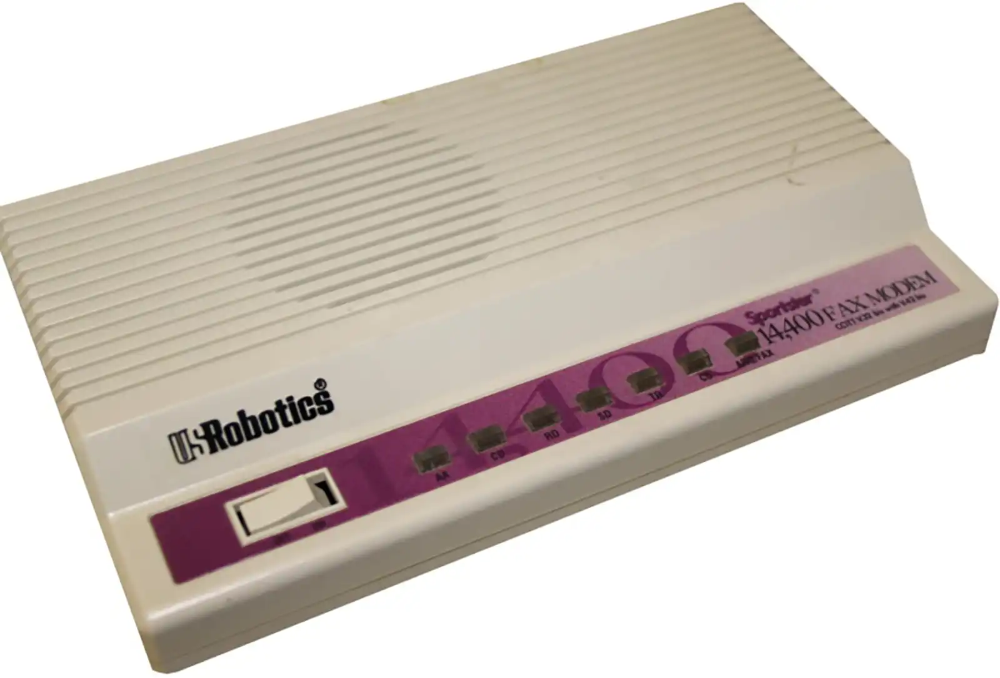

Retro Tech Gallery
The Retro Tech Gallery takes you on a nostalgic trip through the history of personal and computing devices. From analog dial phones to bulky CRT monitors, these gadgets paved the way for the sleek digital tools we use today.

Floppy Disks were one of the first portable storage devices. Though they only held kilobytes to a few megabytes of data, they were essential for sharing software and documents in the 1980s and 1990s.
Dial-up Modems offered access to the early internet at painfully slow speeds. The screeching sounds of connecting through a phone line are unforgettable for those who experienced it.

Windows 95 marked a revolution in the user interface and software experience. Its taskbar, Start menu, and plug-and-play support made it a massive success in the mid-90s.
Other memorable gadgets include pagers, the Walkman, cassette tapes, Game Boys, and early mobile phones with physical buttons and tiny screens. Each one tells a story about how technology grew more personal, more powerful, and more portable.
← Back to Home